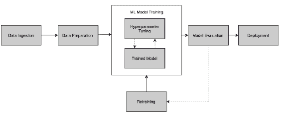
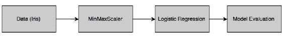
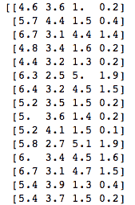
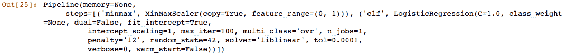
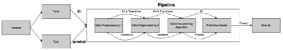
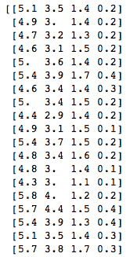
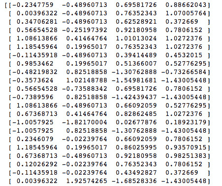
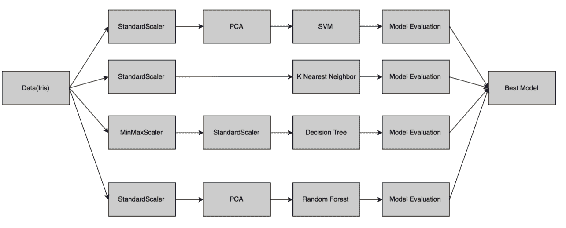
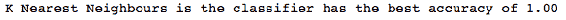

Unknown
前面的章节集中在一个机器学习 ( ML )项目中需要执行的不同阶段。为了成功地执行和产生结果，ML 模型的许多移动部分必须被捆绑在一起。将 ML 流程的不同部分结合在一起的过程被称为管道。管道是一个广义的概念，但对数据科学家来说是一个非常重要的概念。在软件工程中，人们建立管道来开发从源代码到部署的软件。类似地，在 ML 中，创建管道以允许数据从其原始格式流向一些有用的信息。它提供了构造多 ML 并行流水线系统的机制，以便比较几种 ML 方法的结果。
流水线的每一级都被馈送来自其前一级的已处理数据；也就是说，处理单元的输出作为输入提供给下一个步骤。数据在管道中流动，就像水在管道中流动一样。掌握管道概念是创建无错误 ML 模型的一种强有力的方法，而管道是构建 AutoML 系统的一个重要元素。在本章中，我们将讨论以下主题:
- ML 管道简介
- 建立一个简单的管道
- 功能变压器
- 使用弱学习者和集合构建复杂的管道
在下一节中，我们将首先介绍 ML 管道。
Unknown
所有代码示例都可以在本章的 GitHub 链接的Chapter 06文件夹中找到。
Unknown
通常，ML 算法需要干净的数据来检测数据中的一些模式，并对新的数据集进行预测。然而，在现实世界的应用中，数据通常不准备直接馈入 ML 算法。类似地，ML 模型的输出只是数字或字符，需要对它们进行处理，以便在现实世界中执行一些操作。为了实现这一点，ML 模型必须部署在生产环境中。将原始数据转换成可用信息的整个框架是使用 ML 管道来执行的。
以下是 ML 管道的高级图示:

我们将分解上图中所示的块，如下所示:
- 数据摄取:获取数据，导入数据使用的过程。数据可以来源于多个系统，如企业资源规划 ( ERP )软件、客户关系管理 ( CRM )软件、web 应用等。数据提取可以是实时的或分批的。有时，获取数据是一个棘手的部分，也是最具挑战性的步骤之一，因为我们需要有良好的业务和数据理解能力。
- 数据准备:我们在第三章、数据预处理中学习了各种数据准备技术。有几种方法可以将数据预处理成适合构建模型的形式。真实世界的数据通常是不准确的——有缺失的数据，有时会有噪音。因此，有必要对数据进行预处理，使其干净并经过转换，以便可以通过 ML 算法运行。
- ML 模型训练:它涉及使用各种 ML 技术来理解数据中的基本特征，做出预测，或从中获得洞察力。通常，ML 算法已经被编码并作为 API 或编程接口可用。我们需要承担的最重要的责任是调整超参数。使用超参数并优化它们以创建最佳拟合模型是模型训练阶段最关键和最复杂的部分。
- 模型评估:模型评估有多种标准。它是统计方法和商业规则的结合。在 AutoML 流水线中，评估主要基于各种统计和数学度量。如果 AutoML 系统是为一些特定的业务领域或用例开发的，那么业务规则也可以嵌入到系统中，以评估模型的正确性。
- 再培训:我们为用例创建的第一个模型通常不是最好的模型。它被认为是一个基线模型，我们试图通过反复训练来提高模型的准确性。
- 部署:最后一步是部署模型，包括将模型应用和迁移到业务操作中以供使用。部署阶段高度依赖于组织拥有的 IT 基础设施和软件功能。
正如我们所看到的，我们需要执行几个阶段来从 ML 模型中获得结果。scikit-learn 为我们提供了一个管道功能，可以用来创建几个复杂的管道。在构建 AutoML 系统时，管道将会非常复杂，因为必须捕获许多不同的场景。然而，如果我们知道如何对数据进行预处理，利用 ML 算法并应用各种评估指标，那么管道就是给这些部分一个形状的问题。
让我们使用 scikit-learn 设计一个非常简单的管道。
Unknown
我们将首先导入一个名为Iris的数据集，它已经存在于 scikit-learn 的样本数据集库中(http://scikit-learn . org/stable/auto _ examples/datasets/plot _ iris _ dataset . html)。数据集由四个要素组成，有 150 行。我们将在管道中开发以下步骤，以使用Iris数据集训练我们的模型。问题陈述是使用四个不同的特征来预测一个Iris数据的种类:

在这个管道中，我们将使用一个MinMaxScaler方法来缩放输入数据，并使用逻辑回归来预测Iris的种类。然后，将基于精度测量对模型进行评估:
- 第一步是从 scikit-learn 导入各种库，这些库将提供完成我们任务的方法。我们在前面的章节中已经了解了所有这些。唯一增加的是来自sklearn.pipeline的Pipeline方法。这将为我们提供创建 ML 管道所需的必要方法:
from sklearn.datasets import load_iris
from sklearn.preprocessing import MinMaxScaler
from sklearn.linear_model import LogisticRegression
from sklearn.model_selection import train_test_split
from sklearn.pipeline import Pipeline
- 下一步是加载iris数据，并将其分成训练和测试数据集。在此示例中，我们将使用 80%的数据集来训练模型，剩余的 20%用于测试模型的准确性。我们可以使用shape函数来查看数据集的维度:
# Load and split the data
iris = load_iris()
X_train, X_test, y_train, y_test = train_test_split(iris.data, iris.target, test_size=0.2, random_state=42)
X_train.shape
- 以下结果显示了具有4列和120行的训练数据集，这相当于Iris数据集的 80%,符合预期:
- 接下来，我们打印数据集以浏览数据:
print(X_train)
上述代码提供了以下输出:

- 下一步是创建管道。管道对象是(键，值)对的形式。Key 是具有特定步骤名称的字符串，value 是函数或实际方法的名称。在下面的代码片段中，我们将MinMaxScaler()方法命名为minmax，将LogisticRegression(random_state=42)命名为lr:
pipe_lr = Pipeline([('minmax', MinMaxScaler()),
('lr', LogisticRegression(random_state=42))])
- 然后，我们将管道对象pipe_lr拟合到训练数据集:
pipe_lr.fit(X_train, y_train)
- 当我们执行前面的代码时，我们得到以下输出，它显示了构建的拟合模型的最终结构:

- 最后一步是使用score方法对test数据集上的模型进行评分:
score = pipe_lr.score(X_test, y_test)
print('Logistic Regression pipeline test accuracy: %.3f' % score)
从以下结果可以看出，模型的准确度为0.900，为 90%:
在前面的例子中，我们创建了一个管道，它由两个步骤组成，即minmax缩放和LogisticRegression。当我们在pipe_lr管道上执行fit方法时，MinMaxScaler对输入数据执行fit和transform方法，并将其传递给估计器，这是一个逻辑回归模型。流水线中的这些中间步骤被称为变压器，最后一步是估算器。
变压器用于数据预处理，有fit和transform两种方法。fit方法用于从训练数据中寻找参数，而transform方法用于将数据预处理技术应用于数据集。
估计器用于创建机器学习模型，有两种方法，fit和predict。fit方法用于训练 ML 模型，而predict方法用于将训练好的模型应用于测试或新数据集。
下图总结了这一概念:

我们必须只调用管道的 fit 方法来训练模型，并调用 predict 方法来创建预测。其余所有函数，即 Fit 和 Transform 都封装在管道的功能中，并如上图所示执行。
有时，我们需要编写一些自定义函数来执行自定义转换。下一节是关于 function transformer 的，它可以帮助我们实现这个定制功能。
Unknown
一个FunctionTransformer用于定义一个用户定义的函数，该函数使用来自管道的数据，并将该函数的结果返回给管道的下一级。这用于无状态转换，例如取数字的平方或对数，定义自定义缩放函数，等等。
在下面的例子中，我们将使用CustomLog函数和预定义的预处理方法StandardScaler构建一个管道:
- 我们像在前面的例子中一样导入所有需要的库。这里唯一增加的是来自sklearn.preprocessing库的FunctionTransformer方法。此方法用于执行自定义转换器功能，并将其与管道中的其他阶段结合在一起:
import numpy as np
from sklearn.datasets import load_iris
from sklearn.model_selection import train_test_split
from sklearn import preprocessing
from sklearn.pipeline import make_pipeline
from sklearn.preprocessing import FunctionTransformer
from sklearn.preprocessing import StandardScaler
- 在下面的代码片段中，我们将定义一个自定义函数，该函数返回一个数字X的日志:
def CustomLog(X):
return np.log(X)
- 接下来，我们将定义一个名为PreprocData的数据预处理函数，它接受数据集的输入数据(X和目标(Y)。对于这个例子，Y是不必要的，因为我们不打算构建一个监督模型，而只是演示一个数据预处理管道。然而，在现实世界中，我们可以直接使用该函数来创建有监督的 ML 模型。
- 这里，我们使用一个make_pipeline函数来创建一个管道。我们在前面的例子中使用了pipeline函数，我们必须为数据预处理或 ML 函数定义名称。使用make_pipeline函数的优点是它能自动生成函数的名字或键:
def PreprocData(X, Y):
pipe = make_pipeline(
FunctionTransformer(CustomLog),StandardScaler()
)
X_train, X_test, Y_train, Y_test = train_test_split(X, Y)
pipe.fit(X_train, Y_train)
return pipe.transform(X_test), Y_test
- 当我们准备好管道时，我们可以加载Iris数据集。我们打印输入数据X来看看数据:
iris = load_iris()
X, Y = iris.data, iris.target
print(X)
前面的代码打印了以下输出:

- 接下来，我们将通过传递iris数据来调用PreprocData函数。返回的结果是一个转换后的数据集，该数据集首先使用我们的CustomLog函数进行处理，然后使用StandardScaler数据预处理方法:
X_transformed, Y_transformed = PreprocData(X, Y)
print(X_transformed)
- 上述数据转换任务会产生以下转换后的数据结果:

我们现在需要为 AutoML 系统构建各种复杂的管道。在下一节中，我们将使用几个数据预处理步骤和 ML 算法创建一个复杂的管道。
Unknown
在本节中，我们将使用鸢尾花的四个不同特征来确定预测鸢尾花种类的最佳分类器。我们将结合使用四种不同的数据预处理技术和四种不同的 ML 算法来完成这项任务。以下是该作业的管道设计:

我们将如下进行:
- 我们从导入任务所需的各种库和函数开始:
from sklearn.datasets import load_iris
from sklearn.preprocessing import StandardScaler
from sklearn.decomposition import PCA
from sklearn.preprocessing import MinMaxScaler
from sklearn.model_selection import train_test_split
from sklearn.neighbors import KNeighborsClassifier
from sklearn.ensemble import RandomForestClassifier
from sklearn import svm
from sklearn import tree
from sklearn.pipeline import Pipeline
- 接下来，我们加载Iris数据集，并将其分成train和test数据集。X_train和Y_train数据集将用于训练不同的模型，X_test和Y_test将用于测试训练好的模型:
# Load and split the data
iris = load_iris()
X_train, X_test, y_train, y_test = train_test_split(iris.data, iris.target, test_size=0.2, random_state=42)
- 接下来，我们将创建四个不同的管道，每个模型一个。在 SVM 模型的流水线中，pipe_svm，我们将首先使用StandardScaler缩放数字输入，然后使用主成分分析 ( PCA )创建主成分。最后，使用这个预处理数据集建立一个支持向量机 ( SVM )模型。
- 类似地，我们将构建一个管道来创建名为pipe_knn的 KNN 模型。在执行KNeighborsClassifier创建 KNN 模型之前，只有StandardScaler用于预处理数据。
- 然后，我们创建一个用于构建决策树模型的管道。我们使用StandardScaler和MinMaxScaler方法对DecisionTreeClassifier方法使用的数据进行预处理。
- 使用管道创建的最后一个模型是随机森林模型，其中只有StandardScaler用于预处理由RandomForestClassifier方法使用的数据。
下面是创建这四个不同管道的代码片段，这四个管道用于创建四个不同的模型:
# Construct svm pipeline
pipe_svm = Pipeline([('ss1', StandardScaler()),
('pca', PCA(n_components=2)),
('svm', svm.SVC(random_state=42))])
# Construct knn pipeline
pipe_knn = Pipeline([('ss2', StandardScaler()),
('knn', KNeighborsClassifier(n_neighbors=6, metric='euclidean'))])
# Construct DT pipeline
pipe_dt = Pipeline([('ss3', StandardScaler()),
('minmax', MinMaxScaler()),
('dt', tree.DecisionTreeClassifier(random_state=42))])
# Construct Random Forest pipeline
num_trees = 100
max_features = 1
pipe_rf = Pipeline([('ss4', StandardScaler()),
('pca', PCA(n_components=2)),
('rf', RandomForestClassifier(n_estimators=num_trees, max_features=max_features))])
- 接下来，我们需要将管道的名称存储在一个字典中，该字典将用于显示结果:
pipe_dic = {0: 'K Nearest Neighbours', 1: 'Decision Tree', 2:'Random Forest', 3:'Support Vector Machines'}
- 然后，我们将列出迭代执行这些管道的四个管道:
pipelines = [pipe_knn, pipe_dt,pipe_rf,pipe_svm]
- 现在，我们已经准备好了整个管道的复杂结构。剩下的事情就是让数据符合管道，评估结果，并选择最佳模型。
在下面的代码片段中，我们将四个管道中的每一个迭代地拟合到训练数据集:
# Fit the pipelines
for pipe in pipelines:
pipe.fit(X_train, y_train)
- 一旦模型拟合成功执行，我们将使用以下代码片段检查四个模型的准确性:
# Compare accuracies
for idx, val in enumerate(pipelines):
print('%s pipeline test accuracy: %.3f' % (pipe_dic[idx], val.score(X_test, y_test)))
- 我们可以从下面的结果中注意到，k-最近邻和决策树模型以 100%的完美准确率领先。这好得令人难以置信，可能是使用小数据集和/或过度拟合的结果:
- 我们可以使用两个获胜模型中的任何一个来进行部署， k 近邻()或决策树模型。我们可以使用下面的代码片段来实现这一点:
best_accuracy = 0
best_classifier = 0
best_pipeline = ''
for idx, val in enumerate(pipelines):
if val.score(X_test, y_test) > best_accuracy:
best_accuracy = val.score(X_test, y_test)
best_pipeline = val
best_classifier = idx
print('%s Classifier has the best accuracy of %.2f' % (pipe_dic[best_classifier],best_accuracy))
- 由于 k-最近邻和决策树的准确性相似，KNN 被选为最佳模型，因为它是管道中的第一个模型。但是，在这个阶段，我们还可以使用一些业务规则或访问执行成本来决定最佳模型:

Unknown
这一章是为 ML 系统构建管道的草图——这只是冰山一角。建设管道非常复杂。但是，一旦开发出来，就让一个开发者的日子更舒服了。它降低了制定不同模型的复杂性，因此成为创建 AutoML 系统所需的基本概念。我们在本章中描述的概念为您提供了创建管道的基础。当您在本章中构建管道时，您一定已经理解了通过使用管道，模型构建过程变得多么结构化。
下一章将总结我们到目前为止的学习。它还将为您提供一些建议，这些建议将有助于设计 AutoML 系统和成功执行数据科学项目。